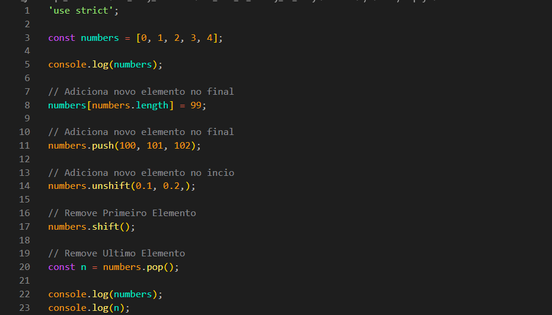
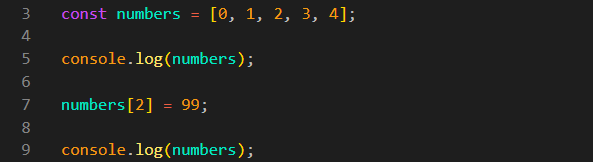
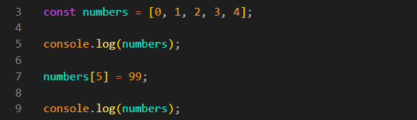
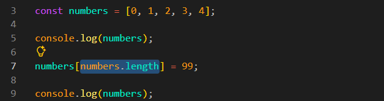
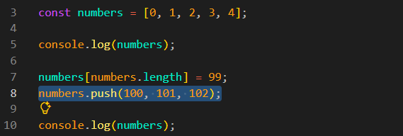
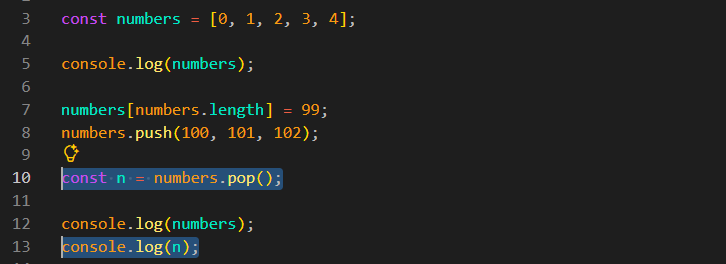
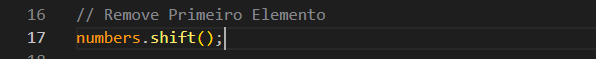

How to modify an array
Intro
Agora iremos ver como adicionar, remover e modificar elementos em um array.
Agora iremos ver como adicionar, remover e modificar elementos em um array.
JS:

Uma das formas de modificar um elemento é selecioná-lo pelo seu índice, usando colchetes []. Para isso, usamos o nome da variável e, dentro dos colchetes, informamos o índice do elemento que queremos alterar. Ex: numbers[2] = 99;.

Com esse método, também podemos adicionar um novo elemento. Para isso, basta escolher um índice que ainda não esteja sendo utilizado. Ex:

Porém, devemos ter cuidado para não definir um índice maior do que o necessário. Por exemplo, se definirmos o índice como [10] quando nosso array possui índices de 0 a 4, serão criadas posições vazias entre o índice 4 e o 10. Essas posições terão o valor empty.
Nosso array possui um comprimento de 5, pois possui os índices de 0 a 4. Podemos usar o length para adicionar um novo elemento na próxima posição disponível. Ex: numbers[numbers.length] = 99;.

Esse é um modo mais simples e direto de adicionar novos elementos ao array. O push adiciona o elemento no final do array, assim como fazemos usando o length, porém de forma mais prática. Também podemos adicionar vários elementos de uma vez. Ex: numbers.push(100, 101, 102);

O unshift também adiciona elementos ao array, porém no início em vez do final. Assim como o push, podemos adicionar vários valores de uma vez. Ex: numbers.unshift(0.1, 0.2, 0.3);
O pop não recebe nenhum argumento. Ele simplesmente remove o último elemento do array. Ex: numbers.pop();. Também podemos armazenar o elemento removido em uma variável. Ex: const n = numbers.pop();. Se utilizarmos um console.log(n);, veremos o valor que foi removido do array.

Podemos estar usando o metodo shift(); para poder remover o primeiro elemento de nosso array, ira funcionar de maneira semelheante ao pop();.
